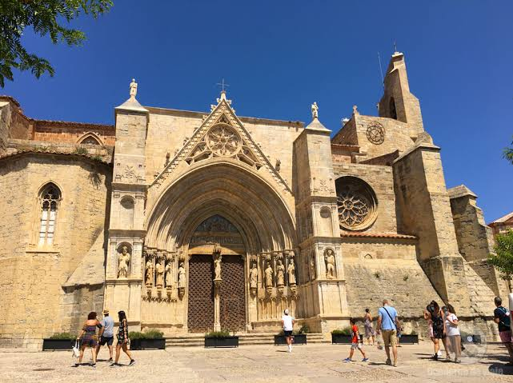

Altea
Calles Blancas, miradores sobre el Mediterráneo y uno de los cascos antiguos más bonitos de la costa.
Ver másDESCUBRE LA COMUNIDAD VALENCIANA
Cuatro lugares con encanto para descubrir, disfrutar y perderse durante una escapada.
Calles Blancas, miradores sobre el Mediterráneo y uno de los cascos antiguos más bonitos de la costa.
Ver más
Calas, mar Mediterráneo y rincones perfectos para disfrutar de una escapada junto al mar.
Ver más
Historia, calles medievales y el castillo del Papa Luna frente al mar Mediterráneo.
Ver más
Una ciudad medieval amurallada situada entre las montañas del interior de Castellón, con un castillo y un encanto único que te transportará a otra época.
Ver más